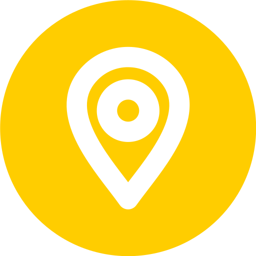
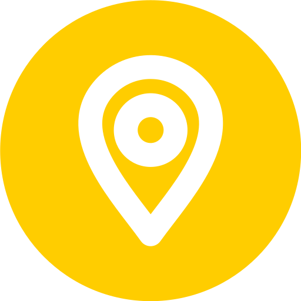

Olá, eu sou o
Giovanni Martins
Desenvolvedor Full Stack
Com mais de quatro anos de experiência em tecnologia e formado em Informática pelo CEFET Varginha, além de estar graduando em Sistemas de Informação pelo CEFET Varginha, ofereço soluções inovadoras para o seu negócio. Se deseja impulsionar sua empresa com uma solução web personalizada, estou pronto para transformar suas ideias em sucesso. Vamos juntos criar uma presença online marcante?

Minha stack de tecnologias
O que faço?
Crio soluções tecnologicas para impulsionar seu negócio
Precisa de visibilidade? Que tal uma Landing Page?
Crio Landing Pages personalizadas para expandir seu alcance e aumentar suas conversões de forma eficiente.
Precisa de Presença online? Que tal um site?
Desenvolvo sites personalizados para fortalecer sua presença online, ajudando a destacar sua marca e alcançar mais pessoas de forma profissional.
Problemas na empresa? Que tal um sistema?
Desenvolvo sistemas personalizados para aumentar a eficiência e otimizar os processos da sua empresa.
Projetos que desenvolvi
Confira alguns projetos que desenvolvi, o próximo a se concretizar será o seu.
Sistema para o RU
CEFET-MG
2022

Sistema para o RU
O Sistema RU é uma plataforma que permite aos estudantes agendar refeições no restaurante universitário, reduzindo o desperdício.
JavaScript HTML Bootstrap Laravel SQL 1
1
LaddingPage The Last Of Us
Projeto pessoal
2023

LaddingPage The Last Of Us
Uma Landing Page visual e imersiva de The Last of Us, destacando a essência do jogo com imagens impactantes e informações chamativas.
JavaScript HTML CSSPokédex
Bootcamp
2023

Pokédex
Uma Pokédex interativa e responsiva que exibe stats, habilidades dos Pokémon e permite capturá-los.
JavaScript HTML CSS APIE-commerce
Bootcamp
2023

E-commerce
Um e-commerce de roupas com temática de espaço e astronautas, oferecendo uma experiência de compra interativa e visualmente envolvente.
React HTML CSS 1
1
Redes Sociais
Bootcamp
2023

Redes Sociais
Projeto de redes sociais, onde criei uma plataforma semelhante ao X (antigo Twitter), com funcionalidades de interação como comentários e curtidas.
React HTML CSS API SQL TypeScriptAutomação com Python
Bootcamp
2024

Automação com Python
Projeto de automação desenvolvido para cadastrar itens automaticamente em um site, facilitando o processo de inserção de dados e aumentando a eficiência.
PythonSite Entre Cartas
Projeto de extensão
2024 - 2025
Site WordPress
Site do projeto Entre Cartas, desenvolvido para promover a leitura e a formação de leitores, com informações sobre o projeto e suas atividades, facilitando o acesso ao conteúdo e engajamento do público.
WordPress HTML CSSPortfólio
Site Portfólio
2024 - 2025
Site WordPress
Projeto de portfólio pessoal, desenvolvido para exibir meus trabalhos e habilidades de forma organizada e atraente, com informações sobre minha formação, projetos realizados e serviços oferecidos.
JavaScript HTML CSSContatos
Entre em contato comigo e vamos juntos impulsionar o seu negócio!


.png)
 
